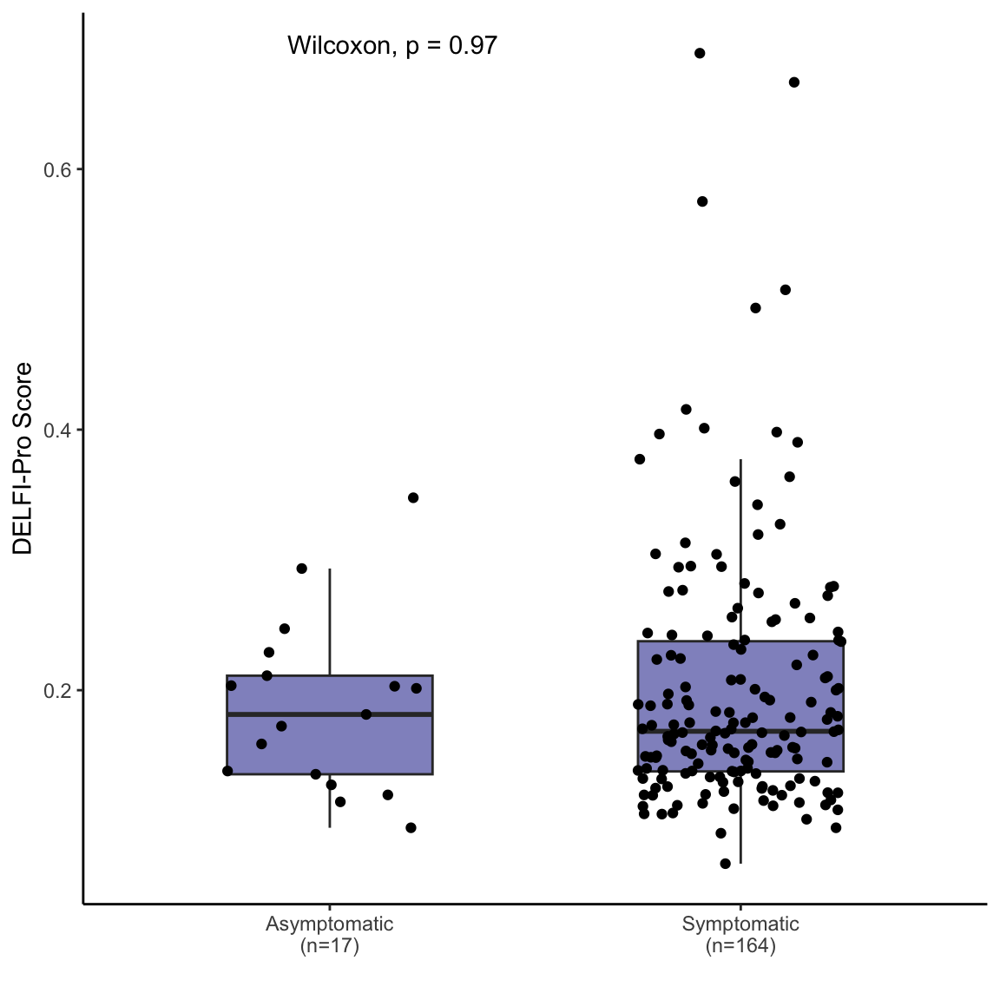

Last updated: 2024-08-01
Checks: 7 0
Knit directory: delfipro2024/
This reproducible R Markdown analysis was created with workflowr (version 1.7.1). The Checks tab describes the reproducibility checks that were applied when the results were created. The Past versions tab lists the development history.
Great! Since the R Markdown file has been committed to the Git repository, you know the exact version of the code that produced these results.
Great job! The global environment was empty. Objects defined in the global environment can affect the analysis in your R Markdown file in unknown ways. For reproduciblity it’s best to always run the code in an empty environment.
The command set.seed(20240612) was run prior to running
the code in the R Markdown file. Setting a seed ensures that any results
that rely on randomness, e.g. subsampling or permutations, are
reproducible.
Great job! Recording the operating system, R version, and package versions is critical for reproducibility.
Nice! There were no cached chunks for this analysis, so you can be confident that you successfully produced the results during this run.
Great job! Using relative paths to the files within your workflowr project makes it easier to run your code on other machines.
Great! You are using Git for version control. Tracking code development and connecting the code version to the results is critical for reproducibility.
The results in this page were generated with repository version 0bc9e1d. See the Past versions tab to see a history of the changes made to the R Markdown and HTML files.
Note that you need to be careful to ensure that all relevant files for
the analysis have been committed to Git prior to generating the results
(you can use wflow_publish or
wflow_git_commit). workflowr only checks the R Markdown
file, but you know if there are other scripts or data files that it
depends on. Below is the status of the Git repository when the results
were generated:
Ignored files:
Ignored: .Rhistory
Untracked files:
Untracked: README.html
Untracked: renv.lock
Untracked: renv/
Unstaged changes:
Modified: .Rprofile
Note that any generated files, e.g. HTML, png, CSS, etc., are not included in this status report because it is ok for generated content to have uncommitted changes.
These are the previous versions of the repository in which changes were
made to the R Markdown (analysis/S12.Rmd) and HTML
(docs/S12.html) files. If you’ve configured a remote Git
repository (see ?wflow_git_remote), click on the hyperlinks
in the table below to view the files as they were in that past version.
| File | Version | Author | Date | Message |
|---|---|---|---|---|
| html | 28c6a1b | shay-279 | 2024-08-01 | aa fix more stuff |
| Rmd | c74d1ee | shay-279 | 2024-08-01 | start |
| html | c74d1ee | shay-279 | 2024-08-01 | start |
All cancers
V1 id classifier_type subtype_simple stage model
<int> <char> <char> <char> <char> <char>
1: 214 PGDX26278P healthy 0 Non-cancer Diagnostic ZEUS
2: 216 PGDX26276P healthy 0 Non-cancer Diagnostic ZEUS
3: 230 PGDX25857P cancer Mucinous I Diagnostic ZEUS
4: 231 PGDX25855P healthy 0 Non-cancer Diagnostic ZEUS
5: 233 PGDX25841P healthy 0 Non-cancer Diagnostic ZEUS
6: 256 PGDX25698P cancer Clear Cell II Diagnostic ZEUS
score Ultrasound tumorsize (mm) Pathological Tumor size (mm)
<num> <char> <char>
1: 0.2725528 Unknown Unknown
2: 0.2423632 Unknown Unknown
3: 0.1947595 Unknown Unknown
4: 0.3477159 Unknown Unknown
5: 0.2082652 Unknown Unknown
6: 0.4177008 Unknown Unknown
Symptomatic/Asymptomatic size
<char> <char>
1: Symptomatic Unknown
2: Symptomatic Unknown
3: Symptomatic Unknown
4: Asymptomatic Unknown
5: Symptomatic Unknown
6: Symptomatic Unknown V1 id classifier_type subtype_simple stage model
<int> <char> <char> <char> <char> <char>
1: 7 CGPLOV542P healthy <NA> Non-cancer Diagnostic ZEUS
2: 12 CGPLOV317P healthy <NA> Non-cancer Diagnostic ZEUS
3: 14 CGPLOV419P healthy <NA> Non-cancer Diagnostic ZEUS
4: 16 CGPLOV545P healthy <NA> Non-cancer Diagnostic ZEUS
5: 17 CGPLOV546P healthy <NA> Non-cancer Diagnostic ZEUS
6: 19 CGPLOV507P healthy <NA> Non-cancer Diagnostic ZEUS
7: 21 CGPLOV500P healthy <NA> Non-cancer Diagnostic ZEUS
8: 22 CGPLOV321P healthy <NA> Non-cancer Diagnostic ZEUS
9: 23 CGPLOV549P healthy <NA> Non-cancer Diagnostic ZEUS
10: 24 CGPLOV527P healthy <NA> Non-cancer Diagnostic ZEUS
11: 27 CGPLOV322P healthy <NA> Non-cancer Diagnostic ZEUS
12: 28 CGPLOV551P healthy <NA> Non-cancer Diagnostic ZEUS
13: 29 CGPLOV432P healthy <NA> Non-cancer Diagnostic ZEUS
14: 30 CGPLOV347P healthy <NA> Non-cancer Diagnostic ZEUS
15: 31 CGPLOV324P healthy <NA> Non-cancer Diagnostic ZEUS
16: 32 CGPLOV323P healthy <NA> Non-cancer Diagnostic ZEUS
17: 33 CGPLOV528P healthy <NA> Non-cancer Diagnostic ZEUS
18: 34 CGPLOV553P healthy <NA> Non-cancer Diagnostic ZEUS
19: 35 CGPLOV554P healthy <NA> Non-cancer Diagnostic ZEUS
20: 38 CGPLOV325P healthy <NA> Non-cancer Diagnostic ZEUS
21: 39 CGPLOV387P healthy <NA> Non-cancer Diagnostic ZEUS
22: 40 CGPLOV502P healthy <NA> Non-cancer Diagnostic ZEUS
23: 41 CGPLOV612P healthy <NA> Non-cancer Diagnostic ZEUS
24: 42 CGPLOV386P healthy <NA> Non-cancer Diagnostic ZEUS
25: 43 CGPLOV327P healthy <NA> Non-cancer Diagnostic ZEUS
26: 45 CGPLOV503P healthy <NA> Non-cancer Diagnostic ZEUS
27: 48 CGPLOV562P healthy <NA> Non-cancer Diagnostic ZEUS
28: 49 CGPLOV329P healthy <NA> Non-cancer Diagnostic ZEUS
29: 50 CGPLOV433P healthy <NA> Non-cancer Diagnostic ZEUS
30: 53 CGPLOV330P healthy <NA> Non-cancer Diagnostic ZEUS
31: 55 CGPLOV495P healthy <NA> Non-cancer Diagnostic ZEUS
32: 61 CGPLOV508P healthy <NA> Non-cancer Diagnostic ZEUS
33: 62 CGPLOV575P healthy <NA> Non-cancer Diagnostic ZEUS
34: 80 CGPLOV368P healthy <NA> Non-cancer Diagnostic ZEUS
35: 81 CGPLOV371P healthy <NA> Non-cancer Diagnostic ZEUS
36: 83 CGPLOV512P healthy <NA> Non-cancer Diagnostic ZEUS
37: 87 CGPLOV505P healthy <NA> Non-cancer Diagnostic ZEUS
38: 103 CGPLOV359P healthy <NA> Non-cancer Diagnostic ZEUS
39: 108 CGPLOV397P healthy <NA> Non-cancer Diagnostic ZEUS
40: 114 CGPLOV471P healthy <NA> Non-cancer Diagnostic ZEUS
41: 116 CGPLOV600P healthy <NA> Non-cancer Diagnostic ZEUS
42: 119 CGPLOV335P healthy <NA> Non-cancer Diagnostic ZEUS
43: 121 CGPLOV334P healthy <NA> Non-cancer Diagnostic ZEUS
44: 122 CGPLOV378P healthy <NA> Non-cancer Diagnostic ZEUS
45: 123 CGPLOV363P healthy <NA> Non-cancer Diagnostic ZEUS
46: 124 CGPLOV382P healthy <NA> Non-cancer Diagnostic ZEUS
47: 128 CGPLOV517P healthy <NA> Non-cancer Diagnostic ZEUS
48: 129 CGPLOV519P healthy <NA> Non-cancer Diagnostic ZEUS
49: 145 CGPLOV524P healthy <NA> Non-cancer Diagnostic ZEUS
50: 149 CGPLOV415P healthy <NA> Non-cancer Diagnostic ZEUS
51: 162 CGPLOV320P cancer HGSOC IV Diagnostic ZEUS
52: 163 CGPLOV326P cancer Endometrioid I Diagnostic ZEUS
53: 164 CGPLOV556P cancer HGSOC III Diagnostic ZEUS
54: 165 CGPLOV566P cancer Clear Cell II Diagnostic ZEUS
55: 167 CGPLOV561P cancer HGSOC I Diagnostic ZEUS
56: 176 CGPLOV331P cancer Mucinous I Diagnostic ZEUS
57: 177 CGPLOV597P cancer LGSOC III Diagnostic ZEUS
58: 179 CGPLOV374P cancer HGSOC III Diagnostic ZEUS
59: 180 CGPLOV332P cancer Endometrioid I Diagnostic ZEUS
60: 185 CGPLOV357P cancer Clear Cell I Diagnostic ZEUS
61: 195 CGPLOV384P cancer LGSOC III Diagnostic ZEUS
62: 196 CGPLOV336P cancer HGSOC III Diagnostic ZEUS
63: 203 CGPLOV408P cancer Clear Cell II Diagnostic ZEUS
64: 206 CGPLOV484P cancer <NA> Unknown Diagnostic ZEUS
65: 209 CGPLOV339P cancer HGSOC III Diagnostic ZEUS
66: 214 PGDX26278P healthy 0 Non-cancer Diagnostic ZEUS
67: 216 PGDX26276P healthy 0 Non-cancer Diagnostic ZEUS
68: 230 PGDX25857P cancer Mucinous I Diagnostic ZEUS
69: 231 PGDX25855P healthy 0 Non-cancer Diagnostic ZEUS
70: 232 PGDX25842P healthy 0 Non-cancer Diagnostic ZEUS
71: 233 PGDX25841P healthy 0 Non-cancer Diagnostic ZEUS
72: 256 PGDX25698P cancer Clear Cell II Diagnostic ZEUS
V1 id classifier_type subtype_simple stage model
score Ultrasound tumorsize (mm) Pathological Tumor size (mm)
<num> <char> <char>
1: 0.1908598 <NA> <NA>
2: 0.1679401 <NA> <NA>
3: 0.1048930 <NA> <NA>
4: 0.1567739 <NA> <NA>
5: 0.2035036 <NA> <NA>
6: 0.1379856 <NA> <NA>
7: 0.2267968 <NA> <NA>
8: 0.1829198 <NA> <NA>
9: 0.1301694 <NA> <NA>
10: 0.1695661 <NA> <NA>
11: 0.1322102 <NA> <NA>
12: 0.1157848 <NA> <NA>
13: 0.2014299 <NA> <NA>
14: 0.2933925 <NA> <NA>
15: 0.2666871 <NA> <NA>
16: 0.1836244 <NA> <NA>
17: 0.1230934 <NA> <NA>
18: 0.1195940 <NA> <NA>
19: 0.1910072 <NA> <NA>
20: 0.1538725 <NA> <NA>
21: 0.2030333 <NA> <NA>
22: 0.1322373 <NA> <NA>
23: 0.1539820 <NA> <NA>
24: 0.1186832 <NA> <NA>
25: 0.2111482 <NA> <NA>
26: 0.3638317 <NA> <NA>
27: 0.1278931 <NA> <NA>
28: 0.1090552 <NA> <NA>
29: 0.1260227 <NA> <NA>
30: 0.1246311 <NA> <NA>
31: 0.1583817 <NA> <NA>
32: 0.1645407 <NA> <NA>
33: 0.1464443 <NA> <NA>
34: 0.1261673 <NA> <NA>
35: 0.1604776 <NA> <NA>
36: 0.1496879 <NA> <NA>
37: 0.1354760 <NA> <NA>
38: 0.1652196 <NA> <NA>
39: 0.3966196 <NA> <NA>
40: 0.2243254 <NA> <NA>
41: 0.1618539 <NA> <NA>
42: 0.1730927 <NA> <NA>
43: 0.1193206 <NA> <NA>
44: 0.1551079 <NA> <NA>
45: 0.2396642 <NA> <NA>
46: 0.1050880 <NA> <NA>
47: 0.1212484 <NA> <NA>
48: 0.1668595 <NA> <NA>
49: 0.1880999 <NA> <NA>
50: 0.1789245 <NA> <NA>
51: 1.0000000 <NA> <NA>
52: 0.3218991 <NA> <NA>
53: 0.9506447 <NA> <NA>
54: 0.2353228 <NA> <NA>
55: 0.3474883 <NA> <NA>
56: 0.1151020 <NA> <NA>
57: 0.7281924 <NA> <NA>
58: 0.5549102 <NA> <NA>
59: 0.2327561 <NA> <NA>
60: 0.3383489 <NA> <NA>
61: 0.2081646 <NA> <NA>
62: 0.9944187 <NA> <NA>
63: 0.2438443 <NA> <NA>
64: 0.1733196 <NA> <NA>
65: 0.6604430 <NA> <NA>
66: 0.2725528 Unknown Unknown
67: 0.2423632 Unknown Unknown
68: 0.1947595 Unknown Unknown
69: 0.3477159 Unknown Unknown
70: 0.2383912 <NA> <NA>
71: 0.2082652 Unknown Unknown
72: 0.4177008 Unknown Unknown
score Ultrasound tumorsize (mm) Pathological Tumor size (mm)
Symptomatic/Asymptomatic size
<char> <char>
1: <NA> <NA>
2: Symptomatic <NA>
3: Symptomatic <NA>
4: <NA> <NA>
5: Asymptomatic <NA>
6: Symptomatic <NA>
7: Symptomatic <NA>
8: Symptomatic <NA>
9: Symptomatic <NA>
10: Symptomatic <NA>
11: Symptomatic <NA>
12: Symptomatic <NA>
13: Asymptomatic <NA>
14: Asymptomatic <NA>
15: Symptomatic <NA>
16: Symptomatic <NA>
17: Symptomatic <NA>
18: <NA> <NA>
19: <NA> <NA>
20: Symptomatic <NA>
21: Asymptomatic <NA>
22: Symptomatic <NA>
23: Symptomatic <NA>
24: <NA> <NA>
25: Asymptomatic <NA>
26: Symptomatic <NA>
27: <NA> <NA>
28: Symptomatic <NA>
29: Symptomatic <NA>
30: Symptomatic <NA>
31: Symptomatic <NA>
32: <NA> <NA>
33: Symptomatic <NA>
34: Symptomatic <NA>
35: Symptomatic <NA>
36: Symptomatic <NA>
37: Asymptomatic <NA>
38: Symptomatic <NA>
39: Symptomatic <NA>
40: Symptomatic <NA>
41: Symptomatic <NA>
42: Symptomatic <NA>
43: Symptomatic <NA>
44: Symptomatic <NA>
45: <NA> <NA>
46: Symptomatic <NA>
47: Symptomatic <NA>
48: <NA> <NA>
49: Symptomatic <NA>
50: Symptomatic <NA>
51: <NA> <NA>
52: <NA> <NA>
53: Symptomatic <NA>
54: <NA> <NA>
55: Symptomatic <NA>
56: Symptomatic <NA>
57: Symptomatic <NA>
58: <NA> <NA>
59: Symptomatic <NA>
60: <NA> <NA>
61: Asymptomatic <NA>
62: Symptomatic <NA>
63: Symptomatic <NA>
64: Symptomatic <NA>
65: Symptomatic <NA>
66: Symptomatic <NA>
67: Symptomatic <NA>
68: Symptomatic <NA>
69: Asymptomatic <NA>
70: Symptomatic <NA>
71: Symptomatic <NA>
72: Symptomatic <NA>
Symptomatic/Asymptomatic sizeWarning: NAs introduced by coercion
Attaching package: 'ggpubr'The following object is masked from 'package:cowplot':
get_legend
| Version | Author | Date |
|---|---|---|
| c74d1ee | shay-279 | 2024-08-01 |
| Version | Author | Date |
|---|---|---|
| c74d1ee | shay-279 | 2024-08-01 |
R version 4.4.1 (2024-06-14)
Platform: aarch64-apple-darwin23.4.0
Running under: macOS Sonoma 14.6
Matrix products: default
BLAS: /opt/homebrew/Cellar/openblas/0.3.27/lib/libopenblasp-r0.3.27.dylib
LAPACK: /opt/homebrew/Cellar/r/4.4.1/lib/R/lib/libRlapack.dylib; LAPACK version 3.12.0
locale:
[1] en_US.UTF-8/en_US.UTF-8/en_US.UTF-8/C/en_US.UTF-8/en_US.UTF-8
time zone: America/New_York
tzcode source: internal
attached base packages:
[1] stats graphics grDevices datasets utils methods base
other attached packages:
[1] ggpubr_0.6.0 useful.stuff.aa_0.0.0.9000
[3] readxl_1.4.3 devtools_2.4.5
[5] usethis_3.0.0 here_1.0.1
[7] RColorBrewer_1.1-3 pROC_1.18.5
[9] data.table_1.15.4 cowplot_1.1.3
[11] lubridate_1.9.3 forcats_1.0.0
[13] stringr_1.5.1 dplyr_1.1.4
[15] purrr_1.0.2 readr_2.1.5
[17] tidyr_1.3.1 tibble_3.2.1
[19] ggplot2_3.5.1 tidyverse_2.0.0
[21] workflowr_1.7.1
loaded via a namespace (and not attached):
[1] tidyselect_1.2.1 farver_2.1.2 fastmap_1.2.0
[4] promises_1.3.0 digest_0.6.36 timechange_0.3.0
[7] mime_0.12 lifecycle_1.0.4 ellipsis_0.3.2
[10] processx_3.8.4 magrittr_2.0.3 compiler_4.4.1
[13] rlang_1.1.4 sass_0.4.9 tools_4.4.1
[16] utf8_1.2.4 yaml_2.3.10 knitr_1.48
[19] ggsignif_0.6.4 labeling_0.4.3 htmlwidgets_1.6.4
[22] pkgbuild_1.4.4 plyr_1.8.9 abind_1.4-5
[25] pkgload_1.4.0 miniUI_0.1.1.1 withr_3.0.1
[28] desc_1.4.3 grid_4.4.1 fansi_1.0.6
[31] urlchecker_1.0.1 git2r_0.33.0.9000 profvis_0.3.8
[34] xtable_1.8-4 colorspace_2.1-1 scales_1.3.0
[37] cli_3.6.3 rmarkdown_2.27 generics_0.1.3
[40] remotes_2.5.0 rstudioapi_0.16.0 httr_1.4.7
[43] tzdb_0.4.0 sessioninfo_1.2.2 cachem_1.1.0
[46] BiocManager_1.30.23 cellranger_1.1.0 vctrs_0.6.5
[49] carData_3.0-5 jsonlite_1.8.8 car_3.1-2
[52] callr_3.7.6 hms_1.1.3 rstatix_0.7.2
[55] jquerylib_0.1.4 glue_1.7.0 ps_1.7.7
[58] stringi_1.8.4 gtable_0.3.5 later_1.3.2
[61] munsell_0.5.1 pillar_1.9.0 htmltools_0.5.8.1
[64] R6_2.5.1 rprojroot_2.0.4 evaluate_0.24.0
[67] shiny_1.9.1 highr_0.11 backports_1.5.0
[70] memoise_2.0.1 broom_1.0.6 renv_1.0.7
[73] httpuv_1.6.15 bslib_0.8.0 Rcpp_1.0.13
[76] whisker_0.4.1 xfun_0.46 fs_1.6.4
[79] getPass_0.2-4 pkgconfig_2.0.3